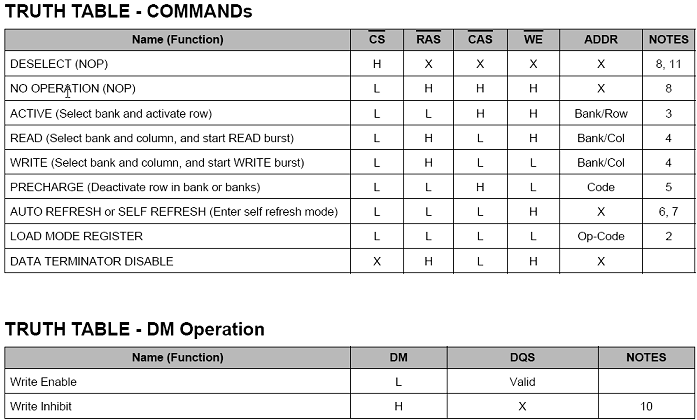

Commands
The truth table commands shown in the figure below provide a quick reference of available commands. This is followed by a verbal description of each command.

The truth table commands shown in the figure below provide a quick reference of available commands. This is followed by a verbal description of each command.
